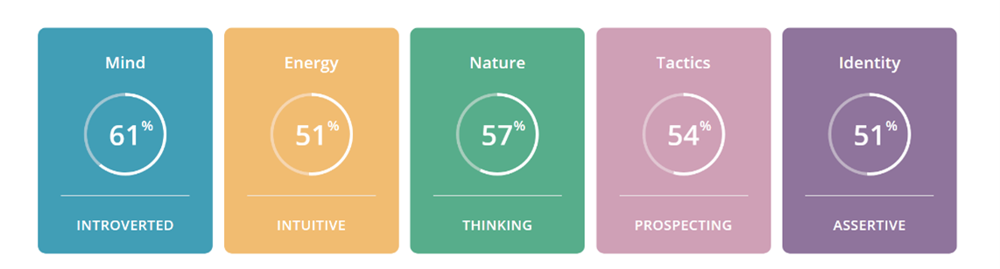
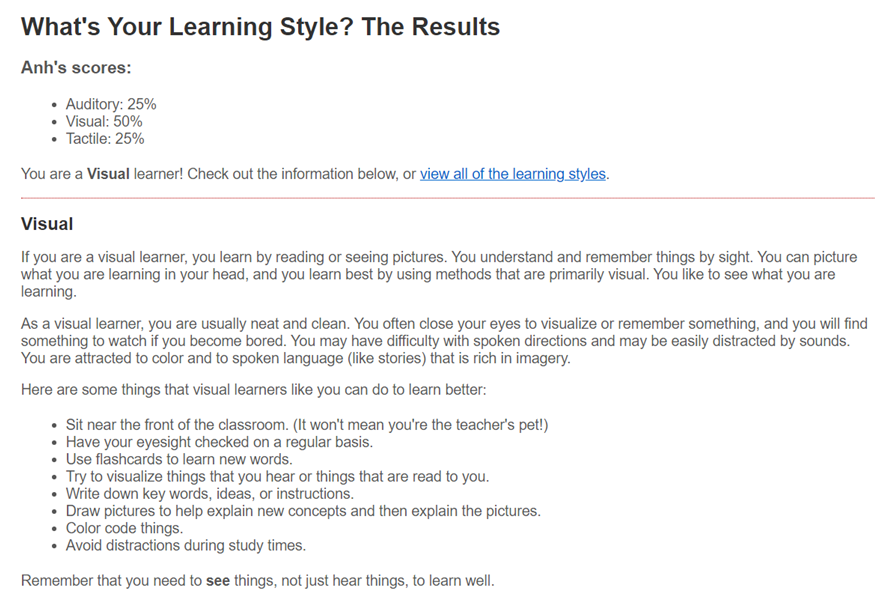
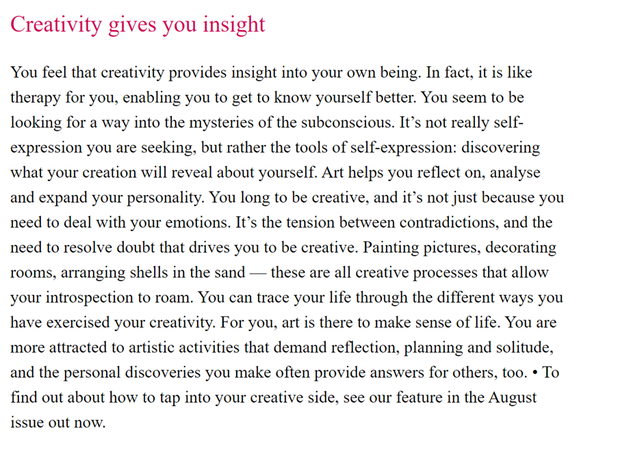

Introduction to Information Technology
Report
Assignment 2: The IT World
Team Profile
1.Team Name
I make a final decision to name my group in the future is Dande. Because this name comes with me since 2016, my fashion brand is first created using this name and it sounds similar to my name so I think it could bring me luck in business.
2.Team Profile
On assignment 1, I completed online personality tests, which I have attached three tests below:



As a visual learning person, I learn through visualizing what I see in a picture. This learning will occasionally result in a few minor errors. Learning by abstraction will let us picture an item in general, but it will not be as accurate as a tactile learner in terms of depth. Moreover, I'm an introvert, but not in the way you may think. Sometimes I want to work alone in a confined location, while other times I want to work in an open environment, asking questions and discovering solutions. I believe myself to be a person with low energy; a part of me is always busy yet lethargic, allowing things to pile up. In the conclusion, I am a person who regards art as life. I view things and analyze them as imagination through visuals. Everything comes from my feelings. My strength is that I can perceive things normally thought upon by people.
That is why I am looking for teammates who contain tactile and energy learning style ability. Tactile learning is a method that says people can learn via touch, sense, and movement. This is also called childhood learning. This method of learning stresses that learning is done by many, and energy learning person is someone that always serious and hard at work, even if they make numerous mistakes, they can swiftly and effectively fix them. Moreover, they are never late and always having the opportunity to efficiently plan your timetable.
Combining into a group having a favorable influence on productivity. Tactile and visual learning, I believe, are the two most essential elements. And then there is the strength to provide greater morale and performance to teammates based on both types of study.
Project Ideas
a. Overview:
The project utilizes Unity as a game engine to create a product that serve as a way of entertainment for consumers of smart devices of any kind. The idea for the product is inspired by the popular video game franchise "RUST". RUST, developed by
Facepunch Studios and published by Steam, is a survival, role-playing game. Although this project is based most on the RUST concept and a few unique item statistics from Green Hell which developed by Creepy Jar, it has its own style and gameplay that distinguishes it. The project is named by GPRP, just a temporary name for now.
b. Motivation:
In the 1990s, a more distinct modern genre of survival games began to develop, although not before the start of the 21st century. UnReal World was established in 1992 by Sami Maaranen and is currently in continuous development. An early example of survival game genre. Scott Alexander cited games are wonderful for socialization; thus, it makes sense to increase popularity with a focus on collaboration for survival. All things considered; survival games won't soon die out. They just only grow in the field.
c. Description:
Before we talk about this project, we need to know what survival game really is. Players will encounter a huge open environment with ecosystems similar to real life, such as food, water, animals, and people, similar to RUST and Green Hell. We must survive in a hostile world filled with lethal dangers. Players will see how other players murder each other in RUST or cannibal tribes in Green Hell. That's all a survival game provides us with, nothing too difficult in terms of developing a concept. However, it will provide such a rich experience that we will have to change the gameplay daily.
So, what will we alter in this project to make it more interesting and appealing to players? The creator did not create RUST or Green Hell for the purpose of combining and storing data. When developers wipe their servers on a biweekly or monthly basis, it always irritates certain gamers. This is because they want people who come in later to experience the fairness after the prior person has logged in for several hours. RUST, on the other hand, simply transmits the experience of one player to another. Green Hell, on the other hand, always maintains all the player's data and lets them select when to keep and when to destroy the data. The disadvantage of Green Hell is that it is a survival game but cannot communicate with other players, only with AI.
Let's get started on the primary project. In a huge open universe, a character will be formed. With HP (Health Points) representing the character's health and a UI bar displaying the character's hunger and mood levels. Depending on whether the surroundings are hot or cold, the character will lose blood in proportion to the severity of the weather. If the character runs or leaps, the hunger stat will rapidly drop as the number of times the character is active increases. To survive hunger, players must locate food such as fruits, mushrooms, veggies, or meat in the game's real-life surroundings. Furthermore, they must understand how to use trees for timber and silk for clothes. What remains of this game is to locate objects on the map, to be able to craft self-defense weapons while venturing into the wilderness or where there are cannibal tribes or bandits, or to gather construction materials. When other players are chasing you to steal you of what the player has, build yourself a haven.
And what is distinctive about this project is always to save player information to ensure it is balanced for new and existing gamers. The developer updates players every month with a new city, existing players stay in the old town and new players can join the new town. But to make it possible for old people and new people to get between towns, the game requires players to remain active for 14 days to move between towns. It's because the newbie is given time to learn and to play like an old one when the two together provide equilibrium.
d. Tools and Technologies:
This project will be developed using the Unity program. Originally, I planned to use 3D Max to draw basic characters, but Unity offers support for this and I find it much simpler. Furthermore, I picked a virtual physical server to host and test this game so that several players may enjoy it at the same time. It's known as a VPS (Virtual Private Server), and I've used it for past game projects and found it to be quite beneficial for low-budget game developers. The game will operate on PCs running Windows 7 64bit and above. There is also a Mac version.
e. Skills Required:
By far, I believe the most important skill required to develop this project is C# or Python programming on the Unity platform. Although Unity provides less coding help, the fundamentals of coding in your chosen language are necessary. As previously said, a virtual server will be required for the development of this project, which will follow it from start to finish. This project also necessitates the use of a personal computer or laptop, there will be a minimum system requirement to experience this well.
f. Outcome:
This project will become the most anticipated set of games if everything is in order and in its right order, with trial-and-error step by step. Because it will feature the most realistic survival gameplay that RUST has produced, but it will also address the faults that the developer RUST did not make, which fans expect to see. Along with the gameplay of Green Hell, where the player is experienced with both other players and the AI of the game, I modified the weak point of both games to offer this project a new spin. innovated while maintaining the fundamentals of the survival game genre that gamers desired. This initiative will have a significant impact on the survival gaming community. It will be a new turning point that transforms the outlook for survival game creators while yet maintaining the ultimate balance for new players.
Feedback
1. Feedback from Do Ha Minh Long - s3634734:
The idea is ambitious and show a strong passion for the project. You are working with existing tools and concept, so the initial steps are simpler but to directly compete with a preexisting game might be a challenge for someone with no experience. However, as a tool to learn what veteran already doing, it is a good idea and a great opportunity. The feasibility of finishing the project is good enough and if you can assemble a good team, the project will likely be finished.
2. Feedback from Nguyen Tuong Dang Khoa - s3891524
I love your project idea because I have played Rust before and spent almost 100 hours in it. Since we both have the same idea of making a game, I would like to be frank. Your project idea, even though fresh and innovative, I think it is too ambitious. Even just building a game like "Rust" alone would take up a lot of times, especially for a beginner dev. Even Rust had a lot of time in its development but still unable to get out of alpha due to how much there are to fix and balancing. Regardless, I think it is good for people to have far reaching dream as it will push them forward to improve themselves. The product might not work but this will serve as a steppingstone for people like us.
3. Feedback Nguyen Thi Kim Thanh – s3754813
Overall, you have creative ideas for your project, but I feel it is a bit too unrealistic, because RUST is a popular game and Green Hell as well, they are big developers so they spend a lot of time and skills to get the game done, but for you and us, we just a small group or even ourself are not an IT expert so coding might be a barrier for us to make a big game like this. Finally, I do love your game idea, but hope you would make it happens because the idea is unique and for me being a gamer, I do love the solutions you are going to make to fix the problems of nowadays game.
I appreciate you taking the time to provide comments to me. These are critical views for me both now and in the future. To illustrate why some people believe it will work yet it does not consider the following. When I mention RUST and Green Hell, it indicates that these game sources are available and can be led on the internet, since not one person can build it, but many people have developed this sort of game, so I don't believe it's too tough. More specifically, it's simple since the RUST creator himself used Unity to create it, just as I will. I'm confident in my own ideas because I've found issues that prior developers missed. However, after reading your criticism, I learned a valuable lesson: never give up and always be realistic in the issue; these forces me to constantly better myself in future knowledge.
IT Technologies
1. Cloud computing
Cloud computing, like its name suggests, is well-known for its applications. It was designed to store information and data that could be accessed remotely or discovered anywhere with permission. It's similar to a cloud or a virtual space. Users may access and store data in these clouds over the internet, thanks to the firms that supply them. This implies that users do not need to be at a certain location or have specific equipment to gain access; instead, they simply need a tiny tablet with an internet connection to work remotely.
Cloud-computing is just a way of providing the internet ("cloud") for quick innovation, flexible resources, and economies of scale – with computing services, including servers, storage, databases, networks, software, analysis and intellect. Usually, you only pay for the cloud services you use, thereby reducing operational expenses, running your infrastructures better and increasingly changing your company demands (Azure Microsoft: What is cloud computing? n.d.)
Cloud computing is increasingly common nowadays; large corporations require it to store secret information or personal information of workers or customers, as well as servers. Netflix is an excellent example. According to Kevin M (2018) during this first quarter, the firm announced on Monday, Netflix acquired 7.4 million customers, a growth that will increase the business's cloud infrastructure requirements.
I feel the improvements of cloud computing would be much more visible if you could fast-forward three years. Here are some of the main concerns that a fortune teller from now would notice that some of those living through it would not perceive as clearly.
1. System in a country will be key areas
By using the cloud, hundreds, maybe thousands, of services and APIs are managed. Businesses will still have long before reached the point of departure in order to administer these services manually. They can have meteorology systems for complexity management in three years' time.
2. Cybersecurity is becoming better and better
Three years from now, cybersecurity will continue to be a problem, even if important steps are taken to increase cloud safety. Large cloud service providers provide safety measures right in your cloud but in many situations third-party suppliers, like distributors and federated access control, give the best option.
3. More capacity to store data, documents, or files.
Today, data is generated in a large volume, and safety is hard to store. Most organizations need a location to keep their data safe. Many companies that use cloud services and additional data centers are projected to be supplied by cloud suppliers at a cheap price, given the high level of competition. The more data in your company, the higher tier cloud services, there is no limit on cloud computing.
Virtualization is the key technology that allows cloud computing. The technology for virtualization divides a physical computer system all into or even more "virtual" machines which may easily be utilized and execute computing tasks.
Cloud computing is one of the key forces to improve the capabilities and services of key digital technologies. The biggest impact of the technical cloud is likely to be the cost savings and increased competitiveness of the IT services accessible to commercial and public companies, as well as the opportunity to create such new services.
Statistics for large data creation suggest that around 2 million terabytes of data are generated daily. The huge amount of data presents three main challenges: the effective storage, processing, and management of data. These three issues are solved in the cloud. The cloud transforms data into tiny data and administers them as virtual data. A convenient way of data helps companies enhance the management of big data in three main ways:
i) Applications will need less time to process data.
ii) Because data is consolidated in the cloud, it will be more secure and easier to administer.
iii) The results of data analysis will be more precise.
As a student, I believe cloud computing, in combination with the internet, is quite beneficial these days. Students may now access data from wherever and at any anytime thanks to cloud computing. Students can enroll and engage in online learning activities by enrolling online. Cloud computing has helped companies to use the storage cloud to securely store massive volumes of data without the need for a complex and costly system. There is not much of a difference in how I feel about this. We all have shared aims in each profession, such as cloud computing, which I use as an online tool that I can use at any time and from any location. The goal may vary, but the technique will always remain the same.
2. Unity
A game engine is a software that includes the simplest methods and instructions for creating a flawless game. The major reason for this is that game creators will spend less time coding and more time focusing on concepts or attractive character designs. Game Engine, in my opinion, has made it easier for everyone to use it and accessible to everyone, including those who know nothing about information technology. It was created for those who don't know how to code but have game ideas and want to sketch out a game. It does not compel the programmer to correct every minor error, especially a clumsy semicolon. They only need to post images, utilize pre-written tools, move, or arrange their characters to create a basic game.
Unity's influence is determined by two primary aspects. The engine's adoption by big developers, as well as the adoption of more powerful gaming gear and services, may allow the engine to be used to its full potential. At the present, the release of the newest generation of video game consoles, particularly X-Box and Play Station series has created a need for a better engine that can take use of that hardware capability.
As a consumer, Unity will have a modest influence on me and others because of its nature as a given tool for industry. While I can observe the level of my entertainment not just in games, but also in certain film production rise, it doesn't have any significant consequences. As a game developer, as I and my team are probably a tiny developer team, the influence will also be minor because we have no resource and no capacity to make full advantage of even the existing version of Unity and when we do, new innovation might introduce and entirely shift the paradigm.
IT Work
How to survive eleven years without a hit in Game development
The presenter discusses his previous and present employment as a game developer in the video. He talks about how the previous games hardly made any money for the effort he put into them, and also for the first year and a half of his career, he had to take up a job as a computer advisor, relying on carefully controlling his finances to live. During this period, he learns not only how to develop games, but also how to choose which games to make, which opportunities to take or refuse, networking to expand his network, and, most crucially, how to manage projects.
How Do Games Sell on Steam?
They discuss the earnings of indie developers on Steam in this presentation. They underlined that more than 80% of the games played do not provide a sufficient minimum income for a US person. Notably, they've certified a game on the Stream that will sell 50 copies for about $250 in profits. However, he later estimated that if you tried to develop a cell game, that number might rise to over 2000 copies with a list price of over $13000. When combined with sales variables like built-in marketing or finding a publisher, you may quadruple your sales income.
30 Things I Hate About Your Game Pitch
Brian Upton of Game on The Rails discusses thirty irritating or unproductive things to avoid while selling your games to a publisher in this 2017 GDC lecture. Learn how publishers assess the games presented to them, what matters to them and what doesn't, and what you can do to put your own game in the best light possible. GDC presentations include a wide variety of developmental subjects, such as game design, programming, music, visual arts, business management, production, internet games, and many more. Every day, we publish a new GDC video. Subscribe to the channel to receive frequent updates and visit GDC Vault to see hundreds of additional in-depth lectures from our past.
A Japanese Game Programmer's Day at Work
A developer in Japan who works in Tokyo Japan. This is Japan's life as a programmer. You can also find out how to work in Tokyo as a Japanese game programmer and how to work at a major Japanese video game studio in one of Japan's biggest video game studios, as well as with other Japanese video game developers, software engines, video game developers, game designers and even Japanese game directors. In addition, this day in the life of a programmer in Japan shows you what a programmer in Japan takes. As you might imagine, programming and coding constitute the biggest part of the day, but there are also special features of our existence in Japan as programmers.
How Indie Games Modified My Life
The video speaks of David and his option is to earn a livelihood gaming. That blows my mind, because it's code terrible, and art/design self-taught. He goes over his life and explains how he came here in this mini documentary. Hopefully it will motivate others to start, end and play the market.
IT professionals perform a variety of responsibilities. They are the individuals who, in one or more places, test, develop, operate, repair, or manage the hardware and software connected with sophisticated computer systems. An IT professional is most likely to work in a company's Information Technology department. This individual would provide computer help to workers' office personnel. This IT specialist will be able to troubleshoot computer issues for the office personnel, allowing them to execute their jobs more effectively.
References
1. Why are survival games so popular? (25 May 2021) Why are survival games so popular? By Scott Alexander.
2. Azure Microsoft (n.d.) What is cloud computing?
3. Kevin M (17 April 2018) ‘Netflix, Long an AWS Customer, Tests Waters on Google Cloud’, The Information, accessed 23 August 2021.